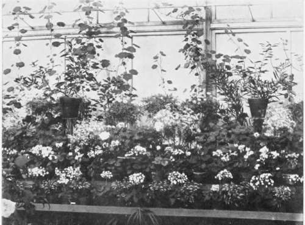

XVII. Seedlings In The House
Description
This section is from the book "Indoor Gardening", by Eben E. Rexford. Also available from Amazon: Indoor Gardening.
XVII. Seedlings In The House
WHILE the house-culture of plants grown from seed intended for outdoor use, may not be, in a strict sense, a phase of indoor gardening coming under the proper scope of a book of this kind, it may not be amiss to give it some consideration here, as nearly all women who love flowers undertake, at one time or another, to grow garden plants from seeds, with a view to securing early flowers.
This is generally done in March or April. Plants started earlier in the season will, nine times out of ten, be so weak and spindling by the time it is safe to put them into the ground that others, grown from seed sown in the garden beds as soon as the weather becomes sufficiently warm, will get the start of them. Indeed, most seedlings from very early sowing will be so lacking in vigor, by the coming of warm and settled weather, that they will be likely to fail utterly when subjected to the ordeal of transplanting and the change from indoors to out. It is only by giving them the very best of care that we succeed with them, and this care they seldom get because it must be made up of everyday attention to little things, which seem so insignificant that we generally fail to recognize the great importance of them, and, by so doing, come short of giving our plants the treatment they stand in need of at a very critical period of their existence.
Seed should be sown in shallow boxes rather than in pots. These boxes may be of any size most convenient for the window. They should not be more than three inches in depth. It is a good plan to make the bottom of zinc, perforated with small holes, and to put a layer of coarse, gritty sand in before filling with soil. This insures better drainage than is likely to result when the bottom of the box is of wood, as the latter will soon become so saturated with water that it will be more retentive of moisture than is desirable for the well-being of the delicate plants we attempt to grow. Zinc will allow all surplus water to pass off with great freedom. This may seem an item of trifling importance, but it is not so. So many things, small in themselves, conspire to work harm to tender seedlings, that it is only by giving each one of them special attention that we can hope to attain success. It is just this attention to little things, favorable and unfavorable, that brings the desired result, bear in mind, you can not afford to forget.
An Attractive Window.
The soil in which the seed is to be sown should be very fine and mellow, but not very rich, as richness encourages too rapid growth, and this is one of the things to be guarded against among seedlings.
Fill the boxes level full of the light soil and settle it by jarring. I would not advise making it any more compact than it will be with this treatment.
Then sow the seed on the surface of the soil, pressing it down with the bare hand. No covering is needed. Pressure will imbed it in the soil firmly enough to secure for it a sufficient amount of moisture to insure germination. I would not apply any water at this time, but it may be necessary to do so by the next day. Do not pour on any, but apply it from a pot having a fine nozzle. This will prevent washing of the soil, and distribute the application more evenly than is possible with a stream. Aim to keep the soil moist all through, all the time, but never go beyond the moist stage. Great harm can be done by the excessive use of water, under the impression that it is necessary to use a good deal in order to facilitate germination.
The boxes should be placed where they can have considerable heat, and kept there until the plants appear. Then put them in a window where the temperature can be kept at about 70° by day and 65° by night, and let there be as little variation as possible from these figures. Too much heat will force the plants, too much coolness will lower their vitality. Therefore both should be avoided as far as possible. Unless conditions are favorable to a control of temperature I would not advise attempting this phase of gardening, as much fluctuation of it almost invariably means failure.
Fresh air must be given the young plants, but they must be zealously kept from drafts. A slight chill often causes them to wither as if touched with frost. Admit air to them as advised in the chapter on the General Care of Plants.
Keep them in the sun as much as possible, but temper it judiciously. During the middle of the day it may be necessary to drop a thin curtain between them and the glass. They need all the light they can get, however, and all the life-giving qualities of the sunshine, but we have to keep in mind the fact that our seedlings are baby plants and can not feed on strong meat, as yet.
As soon as the seedlings have grown their second set of leaves begin to thin them out, if too thick. Let them stand at least an inch apart. At this period there is much danger of "damping off." This is a term in use among gardeners to indicate a sort of general debility that attacks young plants, causing them to so weaken that they wilt, apparently from the effect of light. When this condition sets in there is really no help for them. The real cause of the trouble is lack of vital force, due, in most cases, to improper treatment, but frequently occurring from undiscoverable causes. Professional gardeners lose thousands of young plants every year from "damping off." The term naturally gives the impression that over-dampness has much to do with the disease, for such it really is, but this does not always explain the matter, We know, however, that over-watering greatly intensifies it, and that too much heat makes a bad matter worse. These, combined, doubtless do much to give it a start. This is one reason why water must be applied so carefully. Fresh air has much to do with preventing or checking it, and can not be given too freely, provided it is of the necessary temperature.
If the treatment outlined above is given from the start and adhered to, daily, it is not such a very difficult task to grow good plants from seed, in the house. But it will be seen that much more care is required by the seedlings than by the larger plants in the windows, and that this care is of a very painstaking nature. I do not say this to discourage any one from undertaking to grow her own seedlings, but I cannot conscientiously refrain from giving the facts in the case, on the principle that forewarned is forearmed.
When the young plants have outgrown the early period of their existence, modify the heat somewhat by giving them cooler places in the window. The aim should be to keep them going ahead all the time, but never so rapidly as to interfere with sturdy growth.
Vigor of constitution stands for more than rapidity of development.
If the young plants seem to be too thick in the seed-box, it may be well to put them into small pots, singly. In lifting them from the box, proceed with great care, to avoid injuring their delicate roots. Never take hold of them by their tops, in removing them, but lift them from beneath by using a broad-bladed knife, or some similar tool, making sure to insert it below the roots. In this way enough soil will come up with each plant to prevent exposure of the root-system.
When you have the young plants thoroughly established in pots they will be under much better control than when in the seed-box. It is considerable trouble to pot them, but it pays to do so.
As soon as the weather will admit of it, put them out of doors during the middle of the day, in a place sheltered from the wind, but exposed to the sun. Be sure, however, to bring them inside before the temperature begins to fall.
Do not put them into the ground until it has become warm.
Continue to: